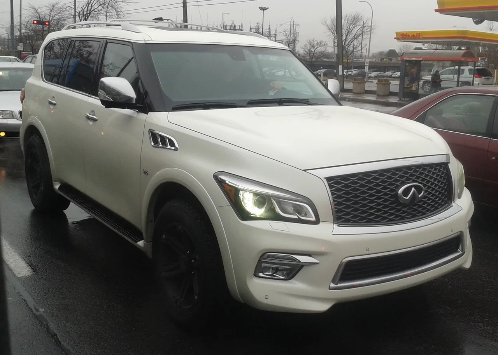
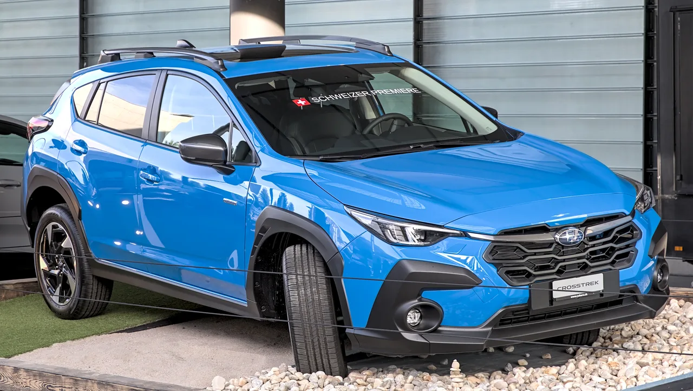

▲ 인피니티 QX80 — 미국 중고 시장에서는 2020~2022년식 상태 좋은 매물을 2만7,000달러 안팎에 구할 수 있다
미국 자동차 매체 카버즈(CarBuzz)가 흥미로운 가격 비교를 내놨습니다. 2026년형 스바루 크로스트렉의 신차 가격은 목적지 배송비를 제외하고 2만6,995달러부터 시작합니다. 그런데 같은 예산으로 중고 시장에서는 완전히 다른 체급의 차를 살 수 있습니다. 바로 인피니티의 대형 럭셔리 SUV, QX80(구형 QX56 포함)입니다. 2020~2022년식에 주행거리 약 6만마일(약 9만6,000km) 수준의 상태 좋은 매물이 대략 이 가격대에 형성돼 있습니다.
1. 6,000달러부터 시작하는 대형 SUV
QX80 중고 시장의 최저가는 약 6,000달러부터 형성돼 있습니다. 다만 이 가격대는 고주행거리이거나 사고·손상 이력이 있을 가능성이 높은 매물입니다. 실제로 2016년식 QX80 베이스 2WD 트림의 가격 분포를 보면 최저 5,700달러, 평균 1만5,469달러, 최고 3만1,998달러까지 폭이 상당히 넓습니다. 같은 연식·트림이라도 상태와 주행거리에 따라 가격이 5배 넘게 벌어질 수 있다는 뜻으로, '저렴한 QX80'을 찾을 때는 가격표만 보고 판단해서는 안 되는 이유이기도 합니다.

▲ 인피니티 QX80(구형) — 연식·트림이 같아도 상태와 주행거리에 따라 가격이 5배 넘게 벌어질 수 있다
2. 1만5,000달러면 10년 차, 10만마일 이하
예산을 조금만 더 올리면 선택지가 넓어집니다. 약 1만5,000달러 수준이면 연식이 10년 안팎이면서 주행거리 10만마일(약 16만km) 미만인 비교적 관리 상태가 양호한 매물을 구할 수 있습니다. 대형 럭셔리 SUV 특유의 감가폭이 큰 편이라, 신차 대비 훨씬 낮은 가격에 V8 엔진과 넉넉한 실내 공간을 갖춘 차를 손에 넣을 수 있는 구간입니다.
| 예산 | 기대할 수 있는 매물 |
|---|---|
| 약 6,000달러 | 고주행거리·손상 이력 가능성 높은 최저가 매물 |
| 약 1만5,000달러 | 10년 안팎 연식, 10만마일 미만 관리 양호 매물 |
| 약 2만7,000달러 | 2020~2022년식, 약 6만마일 수준 |
| 2026 크로스트렉 신차가 | 2만6,995달러부터 |

▲ 스바루 크로스트렉 — 2026년형 신차 가격 2만6,995달러는 QX80 중고 매물 중 2020~2022년식 구간과 거의 겹친다
3. 크로스트렉 신차값 = QX80 2020~2022년식
이번 비교의 핵심은 여기에 있습니다. 2만7,000달러 안팎이면 2020~2022년식 QX80을, 그것도 주행거리 6만마일 수준의 비교적 관리 상태가 좋은 매물로 구할 수 있습니다. 이는 2026년형 크로스트렉의 신차 가격(2만6,995달러)과 거의 같은 수준입니다. 즉 소형 SUV 신차 한 대 값이면, 체급이 훨씬 큰 럭셔리 SUV를 중고로 구매할 수 있다는 뜻입니다. 카버즈는 이런 가격 구조를 두고 "탱크처럼 튼튼한데 저렴한 SUV 가격"이라고 표현했습니다.
4. 그런데 왜 이렇게까지 저렴할까
대형 럭셔리 SUV의 중고 시세가 이렇게 낮게 형성되는 데는 몇 가지 이유가 있습니다. V8 엔진 기반의 대형 SUV는 연비가 좋지 않아 유류비 부담이 크고, 보험료·정비비 등 유지비 전반이 소형 SUV보다 훨씬 높습니다. 여기에 신차 시절 워낙 고가였던 만큼 감가율 자체도 가파릅니다. 즉 '구매 가격'만 저렴할 뿐, 소유 이후의 총유지비까지 감안하면 크로스트렉과 단순 비교하기는 어렵습니다. 저렴한 구매가와 상대적으로 높은 유지비 사이의 트레이드오프를 이해하고 접근해야 하는 차량인 셈입니다.
5. 그래도 매력적인 이유
그럼에도 이 가격 구조가 매력적으로 느껴지는 이유는 명확합니다. 렉서스 LX나 토요타 랜드크루저 같은 경쟁 차종들은 중고 시장에서도 상대적으로 높은 가격을 유지하는 반면, QX80은 같은 체급·비슷한 신뢰성을 갖추고도 훨씬 낮은 가격에 거래됩니다. 대형 SUV 특유의 견고한 프레임바디 구조와 넉넉한 실내 공간을 원하면서도, 초기 구매 비용을 최대한 낮추고 싶은 소비자에게는 여전히 눈여겨볼 만한 선택지입니다. 다만 유지비까지 감안한 전체 예산 계획은 구매 전 반드시 따져봐야 합니다.